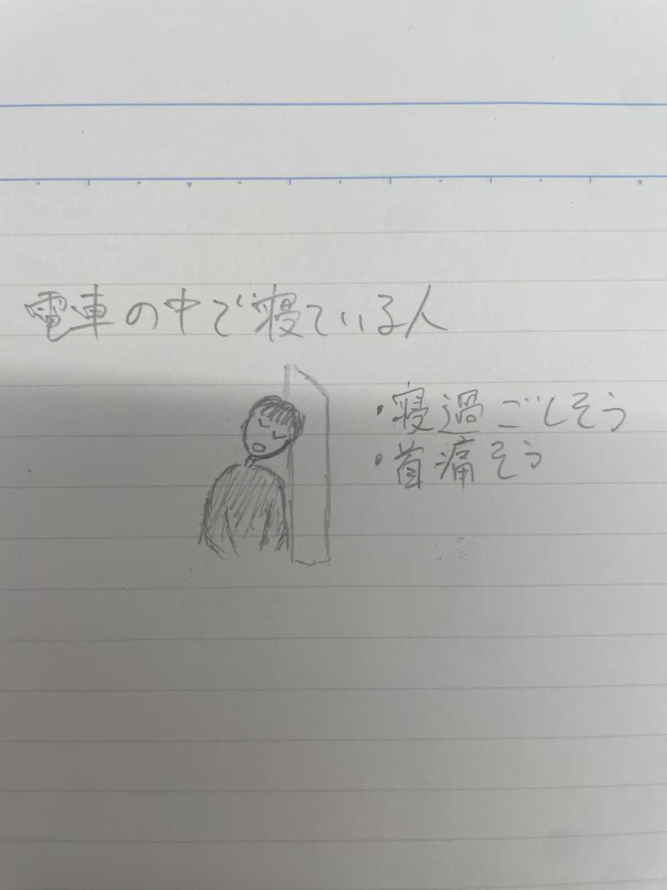
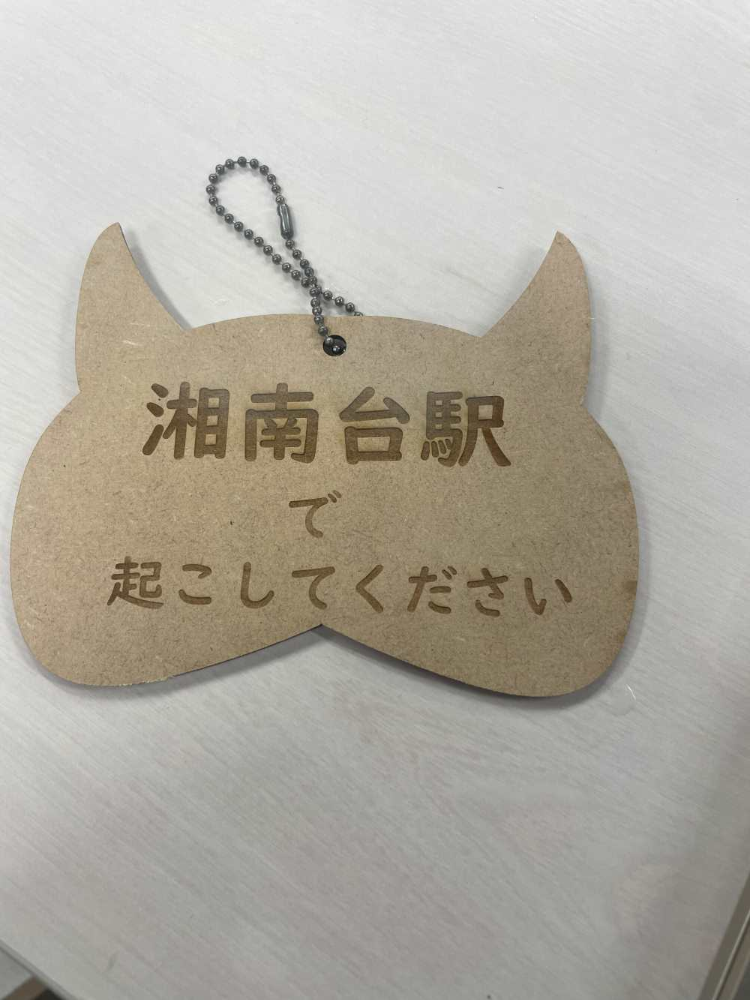
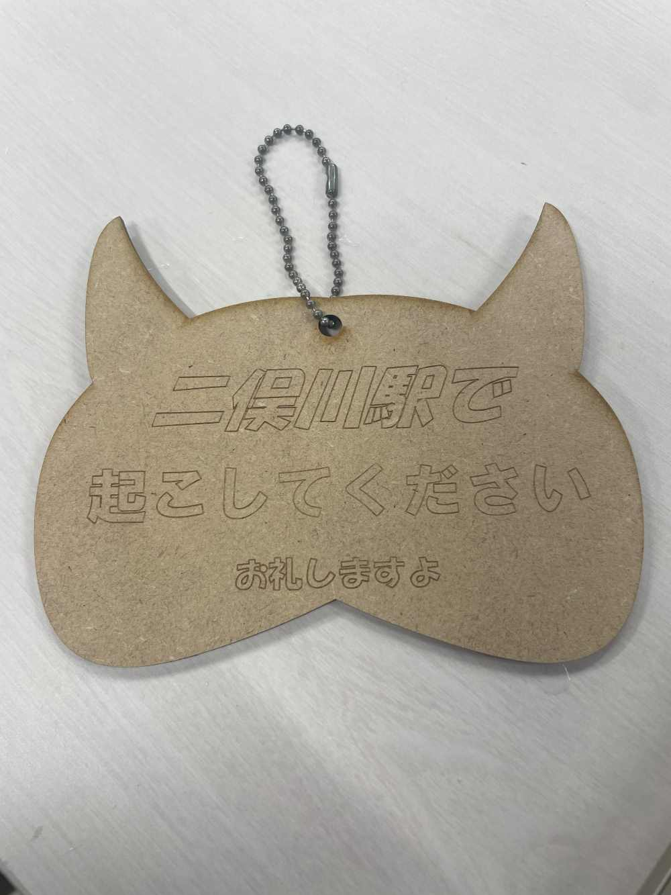
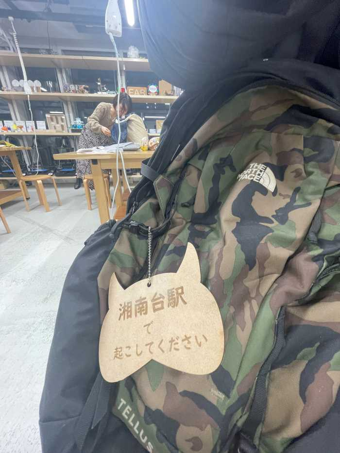

Design for Others
wake me up
自分達が取り組むことにした問題の説明

電車内で寝てしまう人に目をつけました。そして、電車の中で寝てしまうと、目的の駅を乗り過ごしてしまったり、首を痛める、隣の人に寄りかかってしまうなどの問題が起こります。
これらの問題の中から私は、目的の駅を乗り過ごしてしまう問題を取り上げます。
製品プロトタイプ

説明
電車で寝てしまいそうだなと思ったり、寝たいと思ったときにこのストラップをリュックやカバンにつけます。こうすることで目的の駅で起こしてもらうことができるかもしれない。
駅名は私が下校時やバイト帰りで使っている最寄り駅と乗換駅です。周りの人の目につくように、ストラップとしては珍しい木材で作り、形は犬型にしました。
使用機材
レーザーカッター